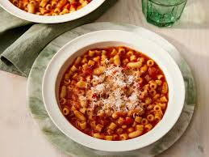

This easy pasta fagioli recipe is typical Italian hearty winter fare. Serve in bowls with a grating of Parmesan cheese, crusty bread, and salad.
Heat olive oil in a saucepan over medium heat. Add carrot, celery, and onion; cook and stir until soft. Add garlic and sauté briefly. Stir in tomato sauce, chicken broth, parsley, basil, and pepper; simmer for 20 minutes.
Bring a large pot of lightly salted water to a boil. Add ditalini pasta and cook for 8 minutes or until al dente; drain.
Add beans and cooked pasta to soup; simmer until heated through, 1 or 2 minutes.